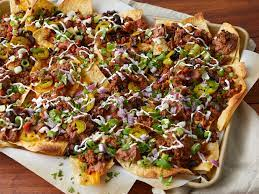

Nachos

Pizza (English: /ˈpiːtsə/ PEET-sə, Italian: [ˈpittsa], Neapolitan: [ˈpittsə]) is a dish of Italian origin consisting of a usually round, flat base of leavened wheat-based dough topped with tomatoes, cheese, and often various other ingredients (such as various types of sausage, anchovies, mushrooms, onions, olives, vegetables, meat, ham, etc.), which is then baked at a high temperature, traditionally in a wood-fired oven.
Ingredients
- 1 teaspoon vegetable oil
- 1 pound ground beef (80:20 lean-to-fat ratio)
- 16 ounces (2 cups) refried beans, canned
- 1/4 cup water
- 1 large bag of tortilla chips
- 4 ounces cheddar cheese, grated (about 2 cups), plus more for topping
- 4 ounces Colby Jack cheese, grated (about 2 cups), plus more for topping
- 1 cup pico de gallo, store-bought or homemade, plus more for topping
- 1/4 cup chopped cilantro
- 1 jalapeño (pickled or fresh), sliced
Steps
- Preheat the oven to 350°F.
- Make the taco spice blend:
Combine all of the spices (chili powder through cayenne) together in a small bowl.
- Make the beef and bean topping:
Heat the vegetable oil on medium high heat until it begins to shimmer. Add the ground beef to the pan and season it with all of the taco spice blend. As the meat cooks, use a spoon to break the meat up into crumbles.
Cook for about 8 minutes until the meat has browned and drain the fat using a colander.
Return the meat to the pan and add the refried beans and the water. Heat the mixture until the beans are smooth and warmed through. Reduce the heat to low and keep the beef-bean mixture warm while you prepare the chips.
- Toast the chips:
On a 13x18-inch oven-safe platter or sheet pan, arrange the tortilla chips in a single layer, overlapping them slightly. Toast the chips in the preheated oven for 5 minutes, or just until you begin to smell their aroma.
- Assemble and bake the nachos:
Carefully remove the pan from the oven and top with one half of the shredded cheeses. Allow the heat from the chips to melt the cheese slightly before topping the chips with the beef and bean mixture.
Sprinkle the remaining cheese over the beef and return the pan to the oven for 5 minutes, or until the cheese has fully melted.
- Top and serve:
Top the nachos with the pico de gallo, chopped cilantro, jalapeño slices, or any of your preferred toppings. Serve hot.